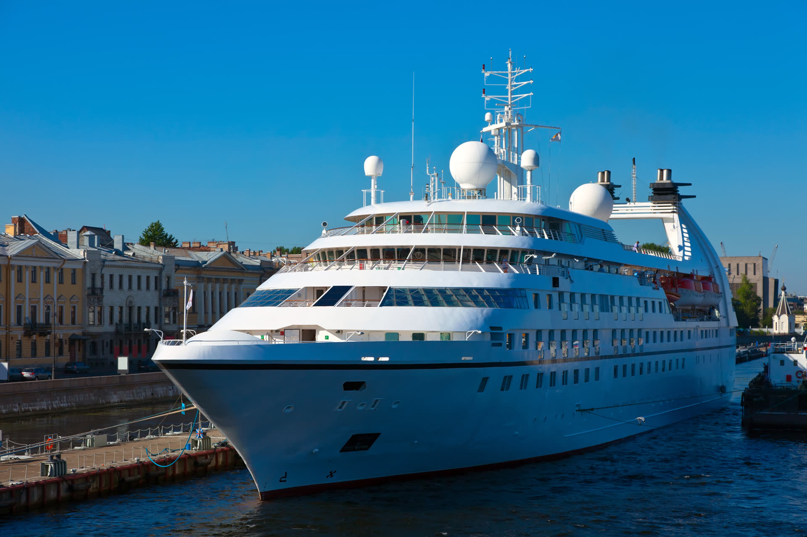
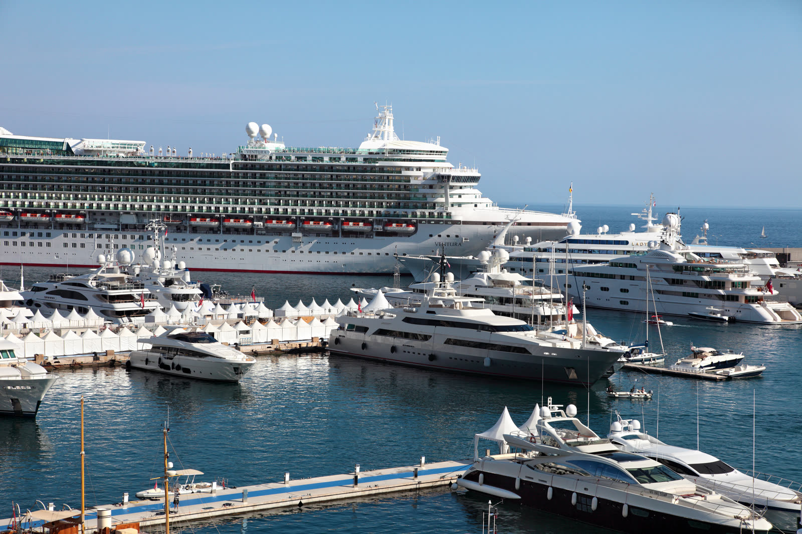
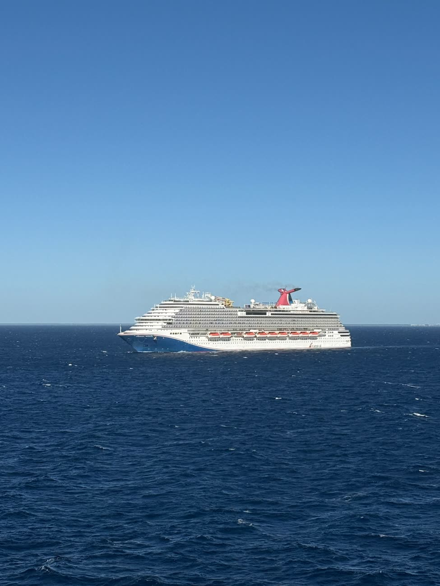

30+
Años de experiencia

Abogados de lesiones en cruceros · En todo el país y el mundo
Las líneas de cruceros tienen abogados trabajando desde el momento en que usted se lesiona. Usted también debería tenerlos. Representamos a pasajeros y tripulación frente a las líneas de cruceros para que usted pueda concentrarse en recuperarse.
Nosotros
El boleto que llega a su correo es un contrato. Puede limitar dónde puede demandar, acortar el plazo que tiene para presentar su reclamo y determinar lo que la línea de cruceros le ofrecerá. Cruise Injury Advocates es la práctica de lesiones en cruceros de Suro & Rodriguez, PLLC, una firma de litigios con sede en Miami que representa a pasajeros y tripulación lesionados en todo el país y el mundo.
Casos que manejamos

Cubiertas mojadas, zonas de piscina y escaleras que provocan caídas graves.
Más informaciónAtención tardía o deficiente del centro médico del barco.
Más informaciónLesiones en excursiones vendidas por el crucero, en el agua o en tierra.
Más informaciónIndemnización para marinos lesionados por negligencia a bordo de un buque.
Más informaciónBeneficios de manutención y atención médica que se deben a la tripulación lesionada en servicio.
Más información
Reclamos cuando un buque o su equipo no está razonablemente en condiciones.
Más informaciónPor qué elegirnos
30+
Años de experiencia
EN/ES
Equipo bilingüe
Mundial
Clientes que atendemos
Nuestros abogados
Su caso de lesión en crucero es manejado por los abogados de Suro & Rodriguez, PLLC, con décadas de experiencia en juicios federales y ante jurado.
Recursos

PlazosLos boletos de crucero pueden acortar su plazo para presentar el reclamo y exigir notificación escrita temprana. Esto es lo que suelen establecer esos plazos.
Leer artículo completo Guía
GuíaRepórtela, documéntela y preserve las pruebas: los pasos que protegen su reclamo antes de volver a tierra.
Leer artículo completoCuando la línea de cruceros vende el tour, la respuesta es más complicada de lo que parece a primera vista.
Leer artículo completo
Solicite una consulta
The Wells Fargo Center
333 SE 2nd Ave., Suite 2000
Miami, FL 33131
Representamos clientes en todo el país y el mundo